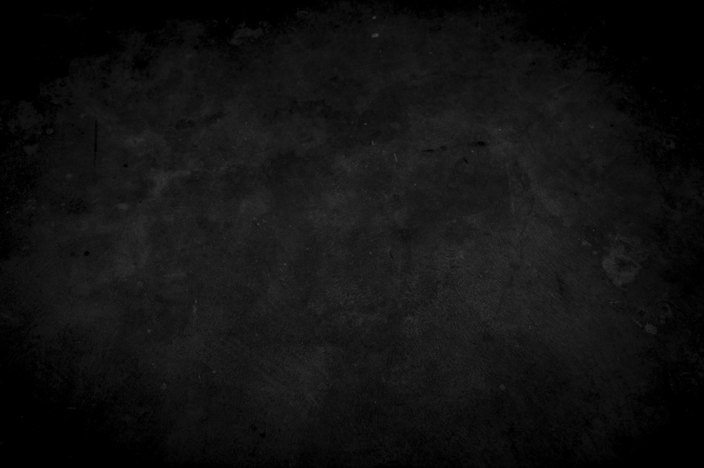
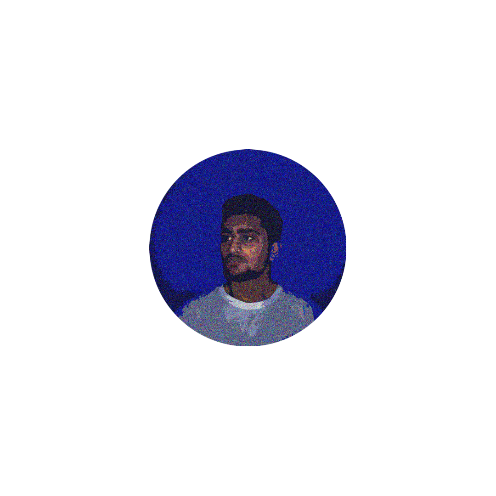

I am a enrolled in an Associates in Computer Programming and Developement at Wake Tech Community College. I am looking to gather some work experience after I am finished with school, hopefully as a computer programmer or data analyst. On the side I am currently working on a Google Career Certificate on Data Analytics.
I was born in Thousand Oaks, California and moved to NC in 2010. In my free time, I enjoy watching NBA basketball and playing videogames. I also spend time making hiphop/rap/trap instrumentals using a digital software called FL Studio. I like to post them on my YouTube channel for public viewing. I have been producing music since 2018. My channel has 1.17k subscribers with 25 videos garnering at least 1k views.